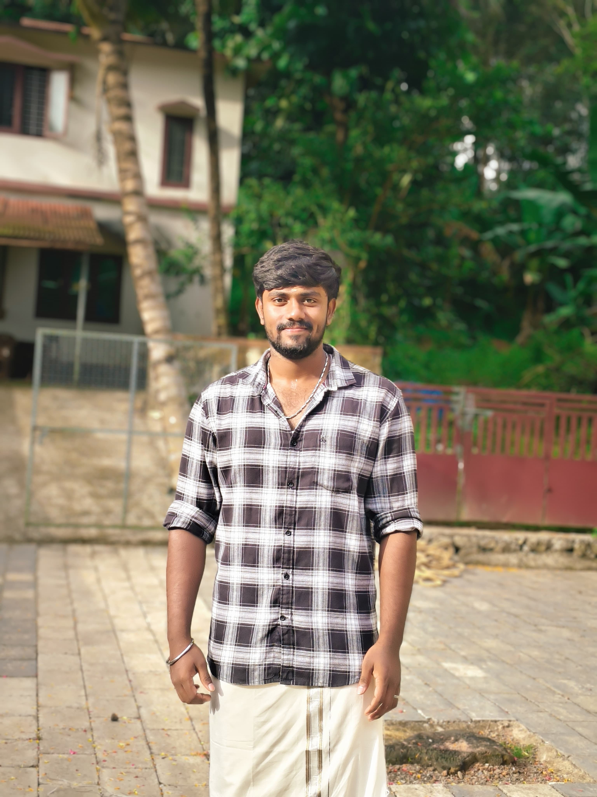

Aspiring Full Stack Developer 🚀
Download Resume
I am a passionate and highly motivated B.Tech Information Technology student with a strong interest in software development, full stack engineering, and problem solving. From the beginning of my academic journey, I have been deeply curious about how technology works behind the scenes — how websites respond instantly, how applications process large amounts of data, and how software can simplify real-world problems. This curiosity gradually transformed into a serious passion for programming and building meaningful digital solutions. Throughout my academic career, I have built a solid foundation in programming languages such as Java, Python, C, and C++. These languages helped me understand core computer science concepts including data structures, algorithms, object-oriented programming, memory management, and system-level logic. I strongly believe that mastering fundamentals is the key to becoming a successful developer, and I continuously practice coding problems to sharpen my analytical and logical thinking abilities. In addition to backend programming, I have developed a strong interest in frontend development and user interface design. I enjoy creating visually appealing and responsive web applications using HTML, CSS, and JavaScript. I believe that a great application is not only powerful in functionality but also intuitive and engaging for users. By combining technical logic with creative design, I aim to build applications that are both efficient and aesthetically impressive. During my learning journey, I have worked on multiple real-time projects that strengthened my practical skills. One of my major projects involved building an offline PDF analysis system capable of extracting metadata, content, and structured information from multiple documents efficiently. This project enhanced my understanding of file processing, automation, and handling large datasets without relying on internet-based APIs. It also improved my debugging skills and my ability to work with external libraries in an optimized and structured way. I have also explored areas like mobile security and application-level vulnerability analysis, which expanded my knowledge of cybersecurity fundamentals. Understanding how systems can be attacked has helped me design applications more securely and responsibly. I strongly believe that modern developers must not only build applications but also ensure they are secure, scalable, and reliable. Beyond academics, I actively work on improving my full stack development skills. I continuously practice building responsive websites, portfolio projects, and mini applications to enhance my practical exposure. I am particularly interested in backend technologies like Java Spring Boot and Python frameworks, as well as frontend ecosystems that allow dynamic and interactive user experiences. My long-term goal is to become a highly skilled full stack developer capable of designing complete end-to-end applications independently. What differentiates me from others is my strong willingness to learn and adapt. Technology evolves rapidly, and I enjoy staying updated with modern tools, frameworks, and best practices. I regularly explore documentation, experiment with new libraries, and improve existing projects to enhance performance and usability. I believe consistent improvement and hands-on experimentation are essential traits of a successful software engineer. I also place strong emphasis on writing clean, maintainable, and readable code. Good code is not just about making something work; it is about building solutions that others can understand, maintain, and scale in the future. I follow structured coding practices and focus on modular design to ensure my projects remain organized and professional. Apart from technical skills, I value communication, teamwork, and time management. Working on academic projects and internships has helped me understand the importance of collaboration and responsibility in a professional environment. I am comfortable presenting technical ideas clearly and working with teams to achieve shared goals. I am currently seeking an entry-level Software Developer opportunity where I can apply my technical knowledge, contribute to meaningful projects, and continue growing as a developer. I am particularly interested in roles that allow me to work on backend systems, full stack applications, or scalable software solutions. My ambition is not just to secure a job but to build a long-term career in the IT industry where I continuously evolve and contribute to impactful technological advancements. In the long run, I aspire to become a well-rounded software engineer with expertise in system architecture, performance optimization, and large-scale application design. I want to work on products that solve real-world problems and positively impact users globally. Every line of code I write brings me one step closer to that goal. I strongly believe that dedication, curiosity, and consistent effort are the driving forces behind success in technology. With a strong academic foundation, practical project experience, and a deep passion for development, I am confident in my ability to contribute effectively to any development team and continuously improve as a professional software engineer.
Mobile NO: 6374449509
Email: harsha01084@gmail.com